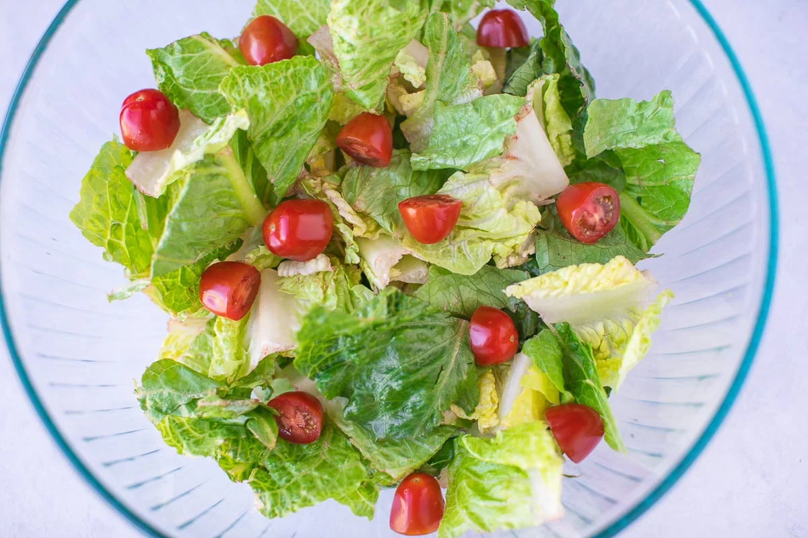

Any-Lettuce Salad!

Yep, salad. I hope you're not running away from your greens. Eat them! That said, they do make for a really good crunchy snack.
Description
No-cook snack that's delicious, crunchy and healthy!
Ingredients
- One or two head of lettuce, any kind, personally I recommend Romaine, butterhead or little gem lettuce
- Preferred salad sauce
Optional Ingredients:
- Cherry tomatoes, optional
- Cheese, parmesan and cheddar works
- Olive or sesame oil
- Egg, just the white parts
Steps
You can stop at any point or skip parts in this recipe after the lettuce to suit your personal taste.
- Strip your lettuce head by hand if it's still a whole head. Chop them into big bite pieces.
- Cut your cherries in half.
- Cut the cheddar cheese into small cubes.
- Toss the lettuce, cherry and cheddar into a bowl and drizzle in the salad dressing. You can make your own, use premades like kewpie salad dressing or use simple sauces like mayonaise. Personally, I use 2:1 ratio with kewpie roasted sesame sauce and mayonaise.
- add a very light drizzle of olive oil and you're done!
There you have it, a nice simple salad to snack on! If you're not going to finish it all in one go, put them in the fridge to enjoy all day.
[Back to home page]
{kind=link}